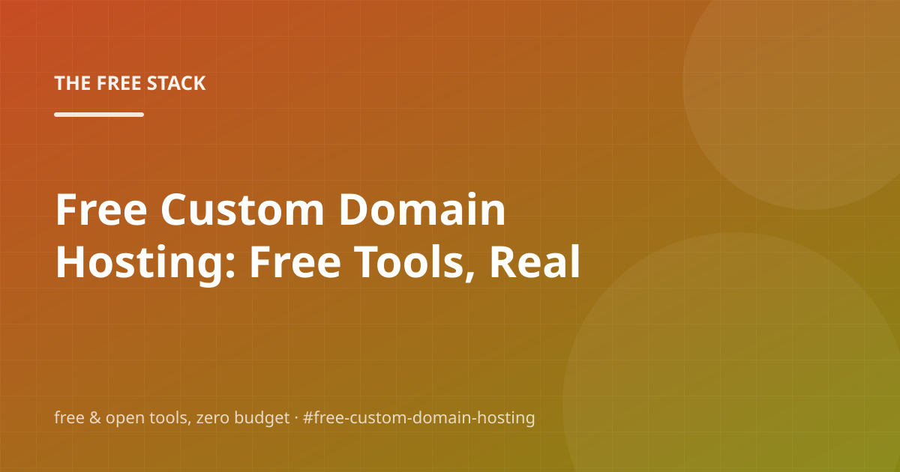

Free Custom Domain Hosting: Free Tools, Real Trade-offs

If you've been searching for free custom domain hosting, you've probably noticed two kinds of advice: paid tools that open with a soft upsell, and abandoned blog posts that stopped being true years ago. This one is built to stay useful, and it's maintained automatically.
We'll walk through Is-a.dev Free Domains, Cloudflare Pages, Github Pages, and Measure before you optimize — and finish with the questions people actually ask, so you can check before you buy anything. You shouldn't have to buy anything.
Is-a.dev Free Domains
Skip the fluff and start here: is-a.dev gives you a real custom domain — username.is-a.dev — completely free, pointed at your GitHub Pages site.
Which, in day-to-day terms, means: It is the fastest path from user.github.io/repo to a name that looks like an actual domain. You request the subdomain, add a CNAME record, and the platform handles the certificate. There is no invoice, ever.
If you only do one thing today, make it this one.
- Request yourhandle.is-a.dev in the is-a.dev app
- Add the provided CNAME record to your repo's Pages settings
- Wait a few minutes for propagation
Cloudflare Pages
Start with the basics. Cloudflare Pages is a free static hosting platform with a global CDN and preview deploys for every pull request.
Which, in day-to-day terms, means: Connect a Git repo and every branch or PR gets its own preview URL, while the main branch gets a production URL on Cloudflare's network. The free tier covers static sites comfortably and custom domains are supported without a separate CDN bill.
If you only do one thing today, make it this one.
- Create a Pages project in the Cloudflare dashboard and link the repo
- Point the build output at the static folder
- Add a custom domain in the project's domains tab
Github Pages
Here's the part most people get wrong. GitHub Pages is a free static-hosting service built directly into the repo that already hosts your code.
Which, in day-to-day terms, means: Point Pages at any subdirectory of a repository and GitHub serves it over HTTPS with a built-in URL, custom domain support, and automatic deploys on every push. For a static blog the entire hosting bill is zero, with no server, no DNS glue, and no renewal dates.
The links in the sources section go straight to the primary docs.
- Pick a directory (e.g. autopilot-blog/site/) as the site source in repo Settings → Pages
- Push (or let the engine push) the built HTML and the site deploys in under a minute
- Optionally map a custom domain in the same settings page
Measure before you optimize
Here's the part most people get wrong. You cannot improve what you do not measure, and the measurement tools here are all free.
So what does that look like when you're actually doing it? Search console data, a simple counter in your build log, or raw access logs tell you which pages earn their keep. Ten minutes of reading that data is worth more than an hour of guessing, and none of it requires a paid analytics account.
For a personal project or side business, this covers you without breaking a sweat.
Frequently asked questions
How much do I need to know before trying free custom domain hosting?
Mostly, yes. Cloudflare Pages is a free static hosting platform with a global CDN and preview deploys for every pull request. The free tier is the product, not the teaser — but the paid tier exists for when you need slas, support or volume.
What are the real limitations of free custom domain hosting?
Less than you'd think. GitHub Pages is a free static-hosting service built directly into the repo that already hosts your code. Start there and only add pieces when you feel actual pain.
Can I keep this free forever, or is it a trial?
is-a.dev gives you a real custom domain — username.is-a.dev — completely free, pointed at your GitHub Pages site. Treat that as the working assumption and re-check the docs once a quarter.